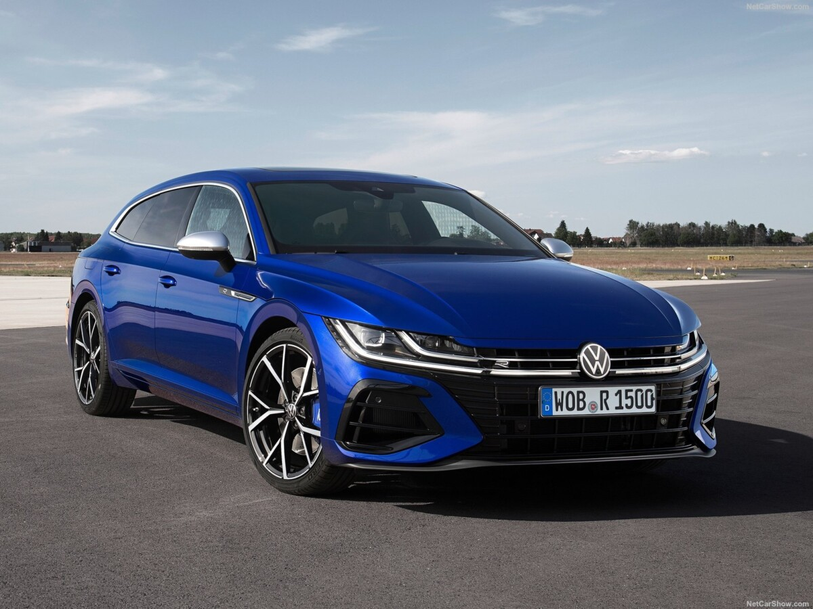
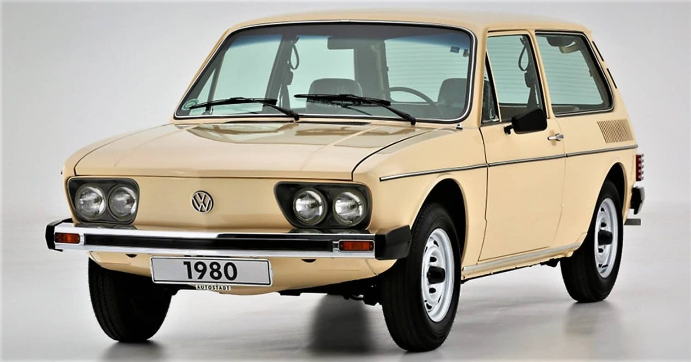
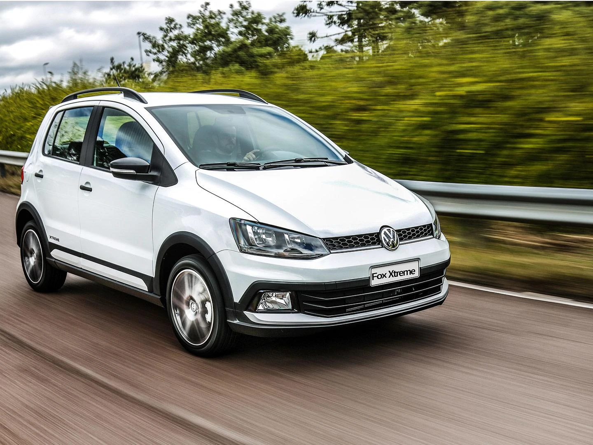
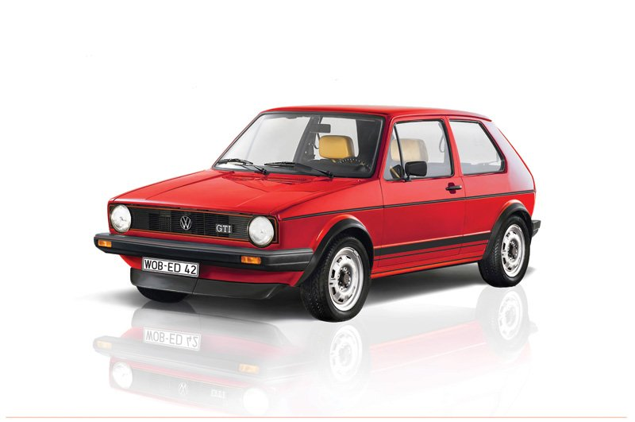
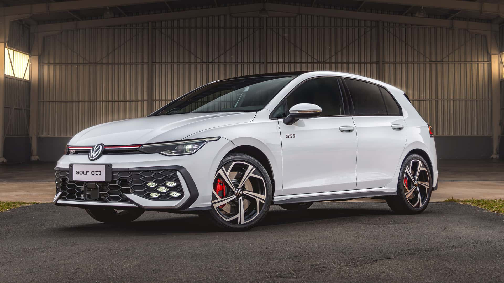
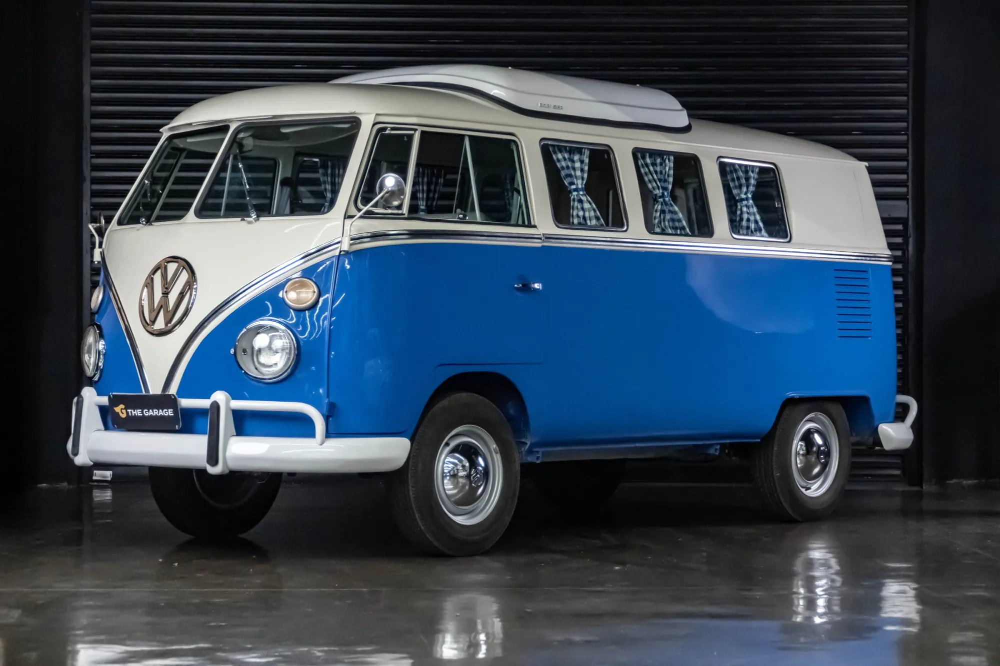
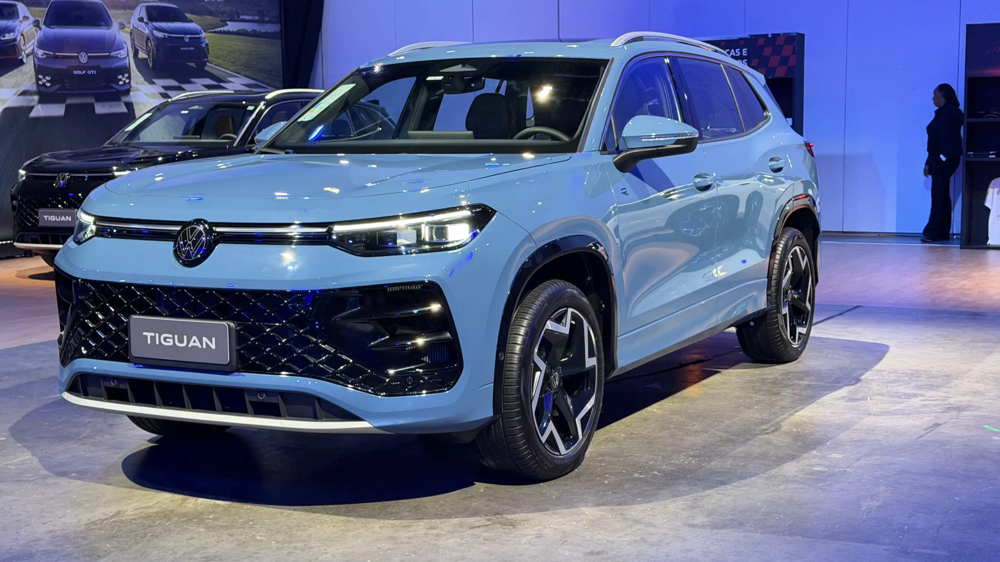
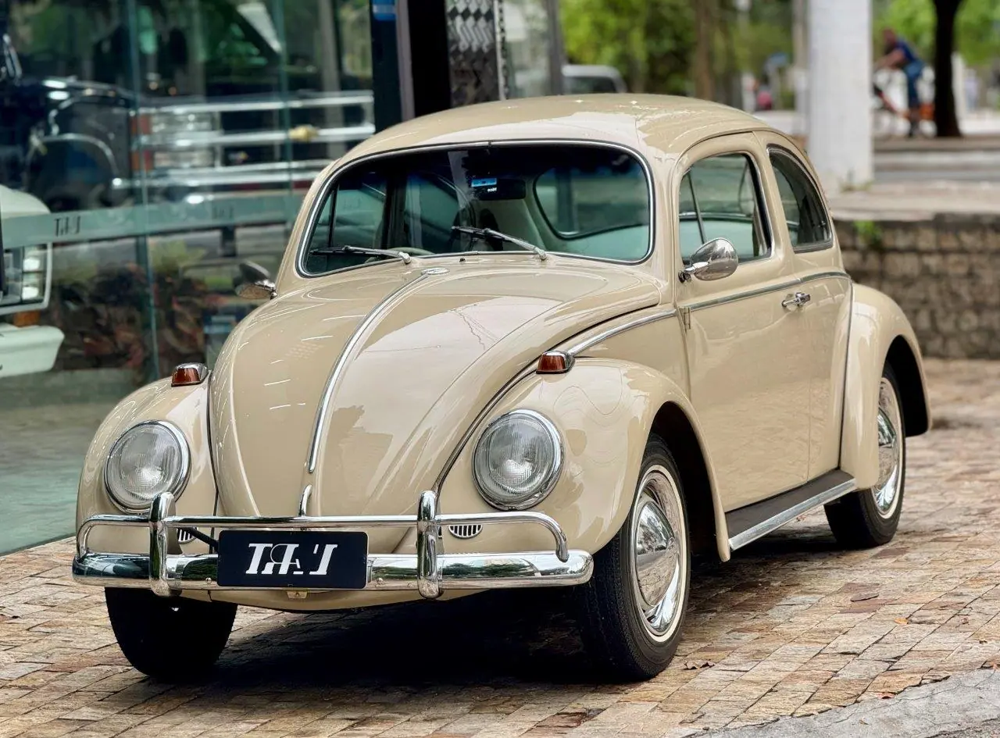
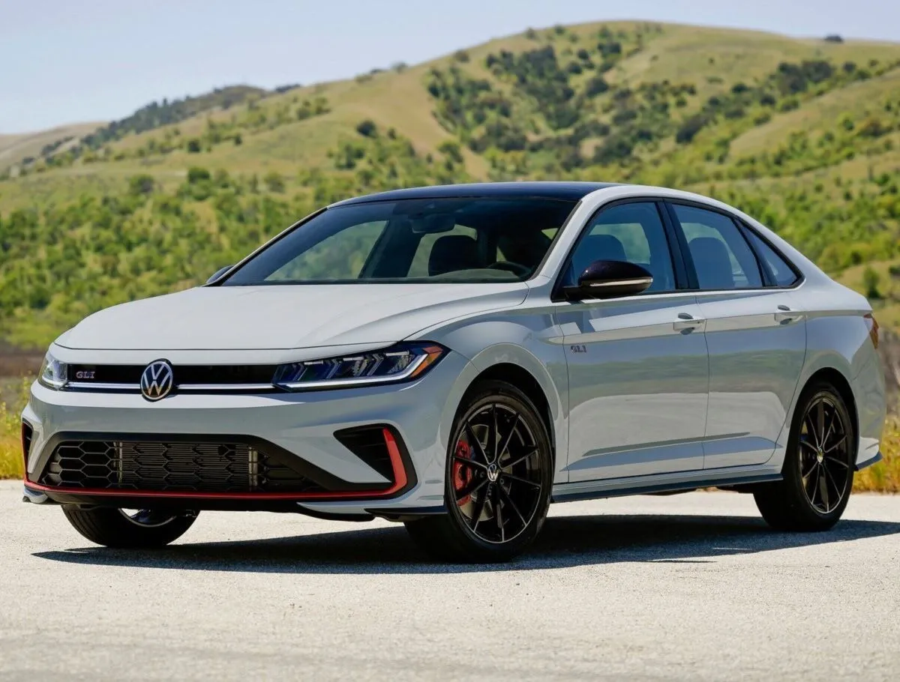

| Preço | R$ 380 ~ 450 mil |
| Consumo Cidade | 9 km/L |
| 0 a 100 km/h | 4,9s |
| Cavalos | 320 cv |
| Torque | 42,8 kgfm |

| Preço | R$ 15 mil ~ 50 mil |
| Consumo Cidade | 8,2 km/L |
| 0 a 100 km/h | 18s |
| Cavalos | 65 cv |
| Torque | 12 kgfm |

| Preço | R$ 55 mil ~ 70 mil |
| Consumo Cidade | 11,3 km/L |
| 0 a 100 km/h | 10,4s |
| Cavalos | 101 cv |
| Torque | 15,4 kgfm |

| Preço | R$ 150 mil ~ 250 mil |
| Consumo Cidade | 10,5 km/L |
| 0 a 100 km/h | 9s |
| Cavalos | 110 cv |
| Torque | 14,3 kgfm |

| Preço | R$ 440 mil |
| Consumo Cidade | 9,8 km/L |
| 0 a 100 km/h | 6,1s |
| Cavalos | 245 cv |
| Torque | 37,7 kgfm |
| Preço | R$ 260 mil |
| Consumo Cidade | 9,9 km/L |
| 0 a 100 km/h | 6,6s |
| Cavalos | 231 cv |
| Torque | 35,7 kgfm |

| Preço | R$ 40 ~ 120 mil |
| Consumo Cidade | 7 km/L |
| 0 a 100 km/h | 31s |
| Cavalos | 52 cv |
| Torque | 10,3 kgfm |

| Preço | R$ 300 mil |
| Consumo Cidade | 8,9 km/L |
| 0 a 100 km/h | 7,4s |
| Cavalos | 272 cv |
| Torque | 35,7 kgfm |

| Preço | R$ 20 ~ 80 mil |
| Consumo Cidade | 8,5 km/L |
| 0 a 100 km/h | 39s |
| Cavalos | 46 cv |
| Torque | 9,1 kgfm |
